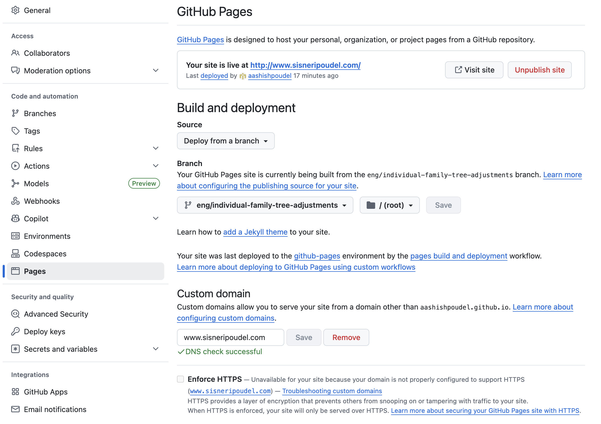

Backend Notes
Domain provider
Cloudflare.com -> {ipythontime@gmail.com, hgD!}
Domain Hosting
aashishpoudel/sisneri-poudel-genealogy
Github Pages setting screenshot:

Wrangler Steps
wrangler login
wrangler deploy
wrangler publish
wrangler deploy
git add -u
git commit -m "genealogy commit backend functions"
git push
wrangler d1 execute sisneri_poudel_db --remote --command "DELETE FROM edit_requests WHERE id=10
wrangler d1 execute sisneri_poudel_db --command "SELECT * FROM edit_requests ORDER BY id DESC LIMIT 25"
wrangler d1 execute sisneri_poudel_db --remote --command "DELETE FROM edit_requests WHERE id=9;"How to run changes with local server
python3 genealogy.py
python3 -m http.server 8000
on Browser -> http://localhost:8000/index.htmlMy story
Add your own story notes here.
Aayan
Add notes for Aayan here.
Adwik
Add notes for Adwik here.
Aashish
Add notes for Aashish here.